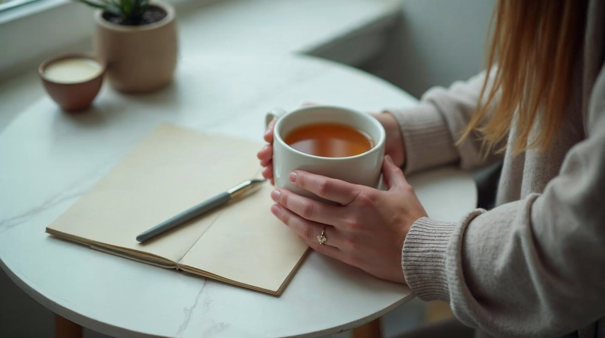
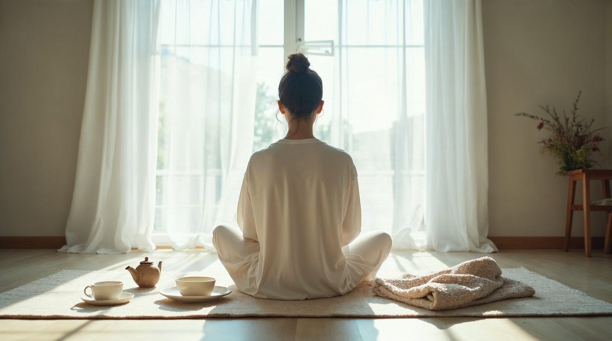
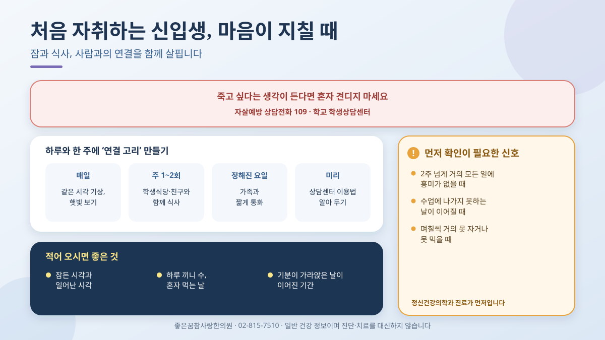

이종호 한의사 감수좋은꿈참사랑한의원 대표원장 (한의사 면허번호 19769)발행 2026-11-24 · 수정 2026-11-27
이 글의 차례
- 왜 이런 불편이 생길 수 있나요
- 낯선 생활에서 오는 지침은 어떤 모습일까요?
- 자취방에서 흔히 생기는 상황
- 스스로 점검해 보세요
- 혼자 살면 왜 잠이 먼저 흔들릴까요?
- 먼저 이렇게 여쭙니다
- 일상에서 먼저 해 볼 수 있는 것
- 하루를 붙잡아 주는 작은 습관
- 사람과 이어지는 방법은 어떻게 찾을까요?
- 끼니는 어떻게 챙기면 좋을까요?
- 시험 기간에는 어떻게 지낼까요?
- 방 안 환경도 조금 바꿔 보세요
- 본가와의 거리는 어떻게 생각할까요?
- 한의원에서 함께 살필 수 있는 경우
- 첫 진료에서는 무엇을 여쭙나요?
- 얼마나 지켜보고 언제 상담할까요?
- 마음 기록은 이렇게 짧게 남겨 보세요
- 몸이 먼저 신호를 보낼 때
- 이렇게 기록해 오시면 상담이 쉬워집니다
- 이런 증상은 먼저 확인이 필요합니다
일어나는 시각과 끼니, 사람을 만나는 시간을 조금씩 일정하게 만드는 것이 낯선 자취 생활에서 마음과 몸을 함께 지키는 출발점입니다.
흑석동 중앙대나 상도동 숭실대 근처 원룸에서 처음 혼자 살게 되면, 학교에 아는 사람이 없어 하루 종일 말 한마디 안 하고 지나가는 날도 생깁니다. 처음 몇 주는 괜찮다가 중간고사 무렵부터 잠이 들쭉날쭉해지고 끼니를 거르게 되는 경우도 많습니다.
왜 이런 불편이 생길 수 있나요
- 처음 집을 떠나면 익숙한 사람과 생활 습관이 한꺼번에 사라져 외로움과 긴장이 커질 수 있습니다.
- 혼자 지내면 잠과 식사 시각을 잡아 줄 사람이 없어 생활 리듬이 쉽게 흐트러집니다.
- 시험 기간의 부담이 더해지면 잠이 줄고 입맛이 떨어지는 흐름이 생기기도 합니다.
- 마음이 지치면 피로, 가슴 답답함, 소화 불편처럼 몸으로도 신호가 나타나는 분이 있습니다.
낯선 생활에서 오는 지침은 어떤 모습일까요?
처음 집을 떠난 학생들이 겪는 지침은 보통 좋은 날과 힘든 날이 번갈아 옵니다. 수업에서 말을 나눈 날은 괜찮다가, 혼자 보낸 주말 저녁에 갑자기 마음이 가라앉는 식입니다.
본가에 다녀온 직후 일요일 밤이나, 친구들이 고향에 간 연휴처럼 특정한 때에 더 힘들어지는 분이 많습니다. 이런 흐름은 새로운 생활에 적응해 가는 과정에서 흔히 나타납니다.
몸으로는 잠드는 데 오래 걸리거나, 아침에 일어나기 힘들거나, 입맛이 줄고 속이 더부룩한 느낌으로 먼저 나타나기도 합니다. 마음이 지친 줄 모르고 몸이 아픈 것으로만 느끼는 경우도 있습니다.
다만 아래 '먼저 확인이 필요합니다'에 적은 신호에 해당한다면 적응의 문제로만 여기지 말고 그 안내를 먼저 따라 주세요. 혼자 판단하기 어려울 때는 학교 상담센터에 먼저 물어보셔도 좋습니다.
자취방에서 흔히 생기는 상황
- 예를 들어 밤에 혼자 있는 시간이 허전해 새벽까지 휴대폰을 보다 잠들면, 아침 수업에 늦을까 봐 서두르다 아침을 거르는 날이 이어지기 쉽습니다.
- 예를 들어 끼니를 편의점이나 배달 음식으로 대충 해결하다 보면 밥때가 들쭉날쭉해지고, 저녁 늦게 한꺼번에 먹어 속이 더부룩한 채 눕게 되기도 합니다.
- 예를 들어 주말에 약속이 없으면 하루 종일 방 밖으로 나가지 않게 되고, 그런 날 밤에는 잠도 더 늦게 오는 분이 많습니다.
- 예를 들어 중간고사가 다가오면 공부 부담에 친구를 만나는 시간을 먼저 줄이게 되어, 외로움과 긴장이 한꺼번에 커지기도 합니다.
스스로 점검해 보세요
- 일어나는 시각이 날마다 두 시간 넘게 차이 난다
- 아침을 먹는 날이 일주일에 이틀이 안 된다
- 하루 종일 누구와도 말하지 않은 날이 일주일에 사흘을 넘는다
- 주말에 방 밖으로 한 번도 나가지 않는 날이 있다
- 새벽 2시가 넘어 잠드는 날이 많다
- 가족이나 친구와 연락하는 횟수가 처음보다 줄었다
- 속이 더부룩하거나 가슴이 답답한 날이 잦아졌다
해당하는 항목이 많다고 해서 잘못 지내고 있다는 뜻은 아닙니다. 가장 바꾸기 쉬운 것 하나를 골라 이번 주에 해 보세요. 한 가지가 익숙해지면 그다음 항목으로 넘어가면 됩니다.
혼자 살면 왜 잠이 먼저 흔들릴까요?
집에서는 가족이 깨우고, 밥 먹으라고 부르고, 불을 끄라고 말해 주는 일이 하루의 틀을 잡아 줍니다. 혼자 살면 그 틀이 한꺼번에 사라져, 잠드는 시각과 일어나는 시각이 조금씩 뒤로 밀리기 쉽습니다.
밤은 하루 중 가장 조용하고 외로움이 크게 느껴지는 시간입니다. 그 허전함을 달래려 휴대폰을 오래 보다 보면 잠이 더 늦어지고, 늦게 일어난 날은 하루가 짧아져 다시 밤에 늦게까지 깨어 있는 흐름이 생깁니다.
잠이 흔들리면 낮에 기운이 없고 마음도 쉽게 가라앉습니다. 그래서 마음을 돌보는 첫걸음으로 잠의 리듬부터 함께 살펴보는 경우가 많습니다.
먼저 이렇게 여쭙니다
- 요즘 잠드는 시각과 일어나는 시각은 어떤가요?
- 하루 몇 끼를 드시고, 혼자 드시는 날이 많은가요?
- 수업이나 동아리처럼 다른 사람과 만나는 시간이 일주일에 얼마나 되나요?
- 가족이나 친구와 연락은 얼마나 자주 하시나요?

일상에서 먼저 해 볼 수 있는 것
- 매일 같은 시각에 일어나 밖에 나가 햇빛 보기
- 일주일에 한두 번은 학생식당이나 친구와 함께 식사하기
- 가족과 정해진 요일에 짧게라도 통화하기
- 학교 학생상담센터 같은 곳의 이용 방법 알아 두기
하루를 붙잡아 주는 작은 습관
일어나는 시각 하나만 정해도 하루가 조금씩 자리를 잡습니다. 수업이 없는 날에도 같은 시각에 알람을 맞추고, 일어나면 창문을 열거나 잠깐 밖에 나가 햇빛을 보세요.
아침은 거창하지 않아도 됩니다. 바나나, 우유, 삶은 달걀처럼 바로 먹을 수 있는 것을 방에 두고, 등교 전에 몇 입이라도 드시는 습관을 들여 보세요.
방 안에서만 지내는 날에는 오후에 한 번이라도 밖에 나가는 일을 만들어 보세요. 동네 한 바퀴 걷기, 학교 도서관이나 카페에서 과제하기처럼 사람들이 있는 곳에 머무는 것만으로도 기분이 달라지는 분이 많습니다.
잠들기 전에는 휴대폰을 침대에서 손이 닿지 않는 곳에 두고 충전해 보세요. 처음 며칠은 허전해도, 잠드는 시각이 당겨지면 다음 날 아침이 한결 덜 무겁습니다.
수업 시간표가 요일마다 달라 생활이 들쭉날쭉하다면, 공강 시간에 할 일을 미리 정해 두세요. 도서관에서 과제 한 가지, 학교 안 산책처럼 빈 시간이 방으로 돌아가는 시간이 되지 않게 하는 것만으로도 하루가 덜 흐트러집니다.
사람과 이어지는 방법은 어떻게 찾을까요?
새 친구를 많이 사귀어야 한다는 부담은 내려놓으셔도 됩니다. 같은 수업을 듣는 사람과 과제 이야기를 나누거나, 학생식당에서 아는 얼굴과 같이 앉는 정도로 시작하면 충분합니다.
동아리나 학과 모임이 부담스럽다면 운동, 봉사, 스터디처럼 무언가를 함께 하는 모임을 골라 보세요. 대화보다 활동이 중심이면 처음 만나는 사람과도 어색함이 덜합니다.
가족과의 통화는 길지 않아도 괜찮습니다. 정해진 요일에 오늘 무엇을 먹었는지만 짧게 나누는 것도, 혼자 사는 생활에 작은 기둥이 되어 줍니다.
고향 친구들과의 연락도 소중합니다. 다만 밤늦게까지 이어지는 메시지는 잠을 미루게 만들 수 있어, 통화나 대화는 저녁 시간에 나누고 잠자리에서는 마무리하는 습관을 들여 보세요.
끼니는 어떻게 챙기면 좋을까요?
자취방에서 매번 요리하기는 쉽지 않습니다. 밥을 한 번에 지어 한 공기씩 나눠 얼려 두고, 달걀, 두부, 김, 냉동 채소처럼 손이 덜 가는 재료를 갖춰 두면 끼니를 거르는 날이 줄어듭니다.
편의점을 이용할 때는 삼각김밥이나 라면만 고르기보다 우유, 삶은 달걀, 샐러드처럼 한두 가지를 곁들여 보세요. 늦은 밤보다는 저녁 8시 전후에 먹는 습관을 들이면 속이 편한 채로 잠들기 쉽습니다.
학생식당은 정해진 시간에 따뜻한 밥을 먹을 수 있는 좋은 곳입니다. 혼자 먹는 것이 어색하다면 처음 몇 번은 이어폰을 끼고 가셔도 괜찮습니다. 자주 가다 보면 아는 얼굴이 생기기도 합니다.
시험 기간에는 어떻게 지낼까요?
시험이 다가오면 밤을 새워 공부하다 잠과 끼니가 함께 무너지기 쉽습니다. 시험 기간에도 일어나는 시각만큼은 크게 바꾸지 말고, 공부는 도서관처럼 사람이 있는 곳에서 해 보세요.
혼자 방에서 공부하면 외로움과 불안이 함께 커지는 분이 있습니다. 같은 과목을 듣는 사람과 짧게라도 함께 공부하거나, 공부를 마치고 친구와 밥을 먹는 약속을 잡아 두면 버틸 힘이 됩니다.
시험이 끝난 뒤에는 며칠 동안 몰아서 자기보다 원래 리듬으로 천천히 돌아오는 것이 좋습니다. 가족에게 시험이 끝났다고 연락하며 한 학기를 버틴 자신을 다독여 주세요. 처음 맞는 시험을 혼자 해낸 것만으로도 충분히 애쓴 한 학기입니다.
방 안 환경도 조금 바꿔 보세요
침대에서 공부하고, 밥 먹고, 휴대폰을 보는 생활이 이어지면 몸이 침대를 잠자는 곳으로 기억하지 못해 잠들기가 더 어려워질 수 있습니다. 좁은 방이라도 책상과 침대의 쓰임을 나눠 보세요.
아침에 커튼을 열어 빛이 들어오게 하고, 밤에는 조명을 낮춰 방 안의 밝기로 하루의 시작과 끝을 알려 주세요. 작은 스탠드 하나로도 저녁 분위기를 바꿀 수 있습니다.
환기를 자주 하고, 빨래와 설거지를 미루지 않는 것도 마음에 영향을 줍니다. 방이 어질러져 있으면 들어올 때마다 마음이 무거워지기 쉬워, 하루 10분 정리하는 시간을 정해 두면 도움이 됩니다. 정리를 마친 방에서는 쉬는 시간도 조금 더 편안해집니다.
본가와의 거리는 어떻게 생각할까요?
주말마다 본가에 다녀오면 마음은 편하지만, 돌아오는 일요일 밤에 허전함이 더 크게 느껴지는 분도 있습니다. 한 달에 한두 번 정도로 정해 두고, 남는 주말에는 이 동네에서 할 일을 하나씩 만들어 보세요.
상도동이나 흑석동 근처의 공원, 한강 산책길, 동네 시장처럼 걸어서 다닐 만한 곳을 하나씩 찾아가 보는 것도 낯선 동네를 내 동네로 만드는 방법입니다. 단골 가게가 하나 생기는 것만으로도 동네가 조금 덜 낯설게 느껴진다는 학생이 많습니다.

한의원에서 함께 살필 수 있는 경우
- 잠이 들쭉날쭉하고 낮에 기운이 없는 경우 잠과 생활 리듬을 함께 살핍니다.
- 입맛이 없거나 소화가 불편해 끼니를 거르는 경우 식사와 소화를 함께 살핍니다.
- 긴장과 불안으로 가슴이 답답한 경우 몸의 긴장 정도와 마음 상태를 함께 여쭙니다.
좋은꿈참사랑한의원에서는 모든 분께 맥부터 짚으며, 마음의 부담이 잠·식사·몸의 긴장으로 어떻게 나타나는지 천천히 여쭙습니다. 필요하면 혀(설진)도 함께 봅니다. 침이나 한약 상담 가운데 지금 상태에 맞는 방법을 정하고, 상담 기관의 도움이 필요하면 함께 안내합니다.
첫 진료에서는 무엇을 여쭙나요?
첫 진료에서는 먼저 맥을 짚으며 잠드는 시각과 일어나는 시각, 끼니, 소화와 대소변을 천천히 여쭙니다. 마음이 힘든 이야기는 꺼낼 수 있는 만큼만 하셔도 됩니다.
필요하면 혀도 살피고, 가슴 답답함이나 어깨·목의 긴장처럼 몸으로 느끼는 불편을 확인합니다. 그다음 생활에서 먼저 해 볼 것 한두 가지와 침이나 한약 상담처럼 함께 살필 방법을 나누어 말씀드립니다.
한약을 고려한다면 복용 중인 약이 있는지 먼저 확인합니다. 다른 병원이나 학교 상담센터에서 받고 있는 도움이 있다면 그대로 이어 가시고, 진료 때 알려 주시면 함께 놓고 살펴봅니다.
얼마나 지켜보고 언제 상담할까요?
일어나는 시각과 아침 먹기를 2주쯤 해 보며, 잠든 시각과 그날 기분을 0~10점으로 짧게 적어 보세요. 점수가 조금씩 오른다면 그 습관을 이어 가시면 됩니다.
해 보아도 잠과 끼니가 계속 흔들리거나, 몸의 불편이 이어져 수업 듣기가 버겁게 느껴진다면 상담을 받아 보시기를 권합니다. 혼자 견디려 하지 않으셔도 됩니다. 기록이 많지 않아도 괜찮으니 편하게 오세요.
마음 기록은 이렇게 짧게 남겨 보세요
일기를 길게 쓰기 어렵다면 하루를 마칠 때 세 줄만 적어 보세요. 몇 시에 잤는지, 오늘 몇 끼를 먹었는지, 오늘 누구와 이야기했는지면 충분합니다.
그 옆에 그날 기분을 0~10점으로 적고, 좋았던 일 하나를 한 단어로 덧붙여 보세요. 2주쯤 모이면 어떤 날 기분이 괜찮았는지, 잠과 끼니가 어떻게 이어지는지 스스로도 보이기 시작합니다.
기록을 보다가 힘든 날이 길게 이어진다고 느껴진다면 그 기록을 들고 학교 상담센터나 진료실을 찾아 주세요. 말로 설명하기 어려운 마음을 기록이 대신 전해 주기도 합니다.
몸이 먼저 신호를 보낼 때
마음이 지치면 가슴이 답답하고 숨이 얕아지거나, 어깨와 목이 늘 뭉쳐 있는 느낌으로 나타나기도 합니다. 그럴 때는 의자에 앉아 숨을 천천히 길게 내쉬며 어깨를 내려 보세요.
속이 자주 더부룩하거나 입맛이 없을 때는 억지로 많이 먹기보다 따뜻하고 부드러운 음식을 조금씩 자주 드셔 보세요. 끼니를 거르고 밤늦게 몰아 먹는 습관이 속을 더 불편하게 만들기도 합니다.
몸의 불편을 그냥 넘기지 않고 알아차리는 것도 마음을 돌보는 일입니다. 오늘 어디가 불편했는지 기록에 한 줄 더해 두시면 진료 때 이야기를 시작하기가 쉬워집니다.
이렇게 기록해 오시면 상담이 쉬워집니다
- 요즘 잠드는 시각과 일어나는 시각
- 하루 끼니 수와 혼자 먹는 날
- 일주일에 사람을 만나거나 대화하는 시간
- 기분이 가라앉은 날이 얼마나 이어졌는지
- 속 불편, 가슴 답답함처럼 몸으로 느끼는 불편과 그 시간대
- 학교 상담센터나 다른 진료를 받고 있다면 그 내용
이런 증상은 먼저 확인이 필요합니다
- 스스로를 해칠 생각이 들면 ☎ 109로 바로 연락하세요.
- 2주 넘게 거의 모든 일에 흥미가 없거나 수업에 나가지 못하는 경우
이런 신호가 있으면 한의원보다 가까운 병원이나 응급실을 먼저 찾으세요.

여쭙는 것
- 요즘 잠드는 시각과 일어나는 시각은 어떤가요?
- 하루 몇 끼를 드시고, 혼자 드시는 날이 많은가요?
- 수업이나 동아리처럼 다른 사람과 만나는 시간이 일주일에 얼마나 되나요?
생활에서 해 볼 것
- 매일 같은 시각에 일어나 밖에 나가 햇빛 보기
- 일주일에 한두 번은 학생식당이나 친구와 함께 식사하기
- 가족과 정해진 요일에 짧게라도 통화하기
한의원에서 함께 살필 것
- 잠이 들쭉날쭉하고 낮에 기운이 없는 경우 잠과 생활 리듬을 함께 살핍니다.
- 입맛이 없거나 소화가 불편해 끼니를 거르는 경우 식사와 소화를 함께 살핍니다.
- 긴장과 불안으로 가슴이 답답한 경우 몸의 긴장 정도와 마음 상태를 함께 여쭙니다.
먼저 확인이 필요한 신호
- 스스로를 해칠 생각이 들면 109로 바로 연락하세요.
- 2주 넘게 거의 모든 일에 흥미가 없거나 수업에 나가지 못하는 경우
한눈에 보는 표
| 구분 | 핵심 |
|---|---|
| 여쭙는 것 | 요즘 잠드는 시각과 일어나는 시각은 어떤가요? 하루 몇 끼를 드시고, 혼자 드시는 날이 많은가요? |
| 생활에서 해 볼 것 | 매일 같은 시각에 일어나 밖에 나가 햇빛 보기 일주일에 한두 번은 학생식당이나 친구와 함께 식사하기 |
| 한의원에서 함께 살필 것 | 잠이 들쭉날쭉하고 낮에 기운이 없는 경우 잠과 생활 리듬을 함께 살핍니다. 입맛이 없거나 소화가 불편해 끼니를 거르는 경우 식사와 소화를 함께 살핍니다. |
| 먼저 확인이 필요한 신호 | 스스로를 해칠 생각이 들면 109로 바로 연락하세요. 2주 넘게 거의 모든 일에 흥미가 없거나 수업에 나가지 못하는 경우 |
자주 묻는 질문
이런 일로 한의원에 가도 되나요?
잠과 식사, 몸의 긴장처럼 몸으로 느끼는 불편이 함께 있다면 이야기 나누러 오셔도 됩니다. 오시면 맥을 짚으며 요즘 잠과 끼니가 어떤지부터 천천히 여쭙겠습니다.
부모님께 알리지 않고 진료받을 수 있나요?
성인이라면 본인이 진료를 받으실 수 있습니다. 진료 내용은 본인 동의 없이 다른 사람에게 알리지 않습니다.
학교 상담센터와 한의원 진료를 같이 받아도 되나요?
함께 받으셔도 됩니다. 상담을 받고 계시다면 진료 때 알려 주세요. 잠과 식사처럼 몸의 불편을 함께 살피겠습니다.
진료 시간은 어떻게 되나요?
좋은꿈참사랑한의원은 평일 09:30~20:00(점심 13:00~14:00), 토·일·공휴일 09:30~15:00에 진료합니다.
좋은꿈참사랑한의원은 재진 때 지난번 이야기부터 이어서 여쭙니다. 진료시간과 예약은 오시는 길에서 확인하세요.
어디서 상담받을 수 있나요?
좋은꿈참사랑한의원은 서울 동작구 만양로2길 2 신성빌딩 3층·5층(서울 동작구 상도동, 7호선 상도역 3번 출구 근처)에 있습니다. 한의사 3명(이종호 대표원장, 조영기 수석진료원장, 정원영 진료원장)이 진료합니다. 진료시간은 평일 09:30~20:00(점심 13:00~14:00), 토·일·공휴일 09:30~15:00이며, 방문 전 전화로 확인을 권합니다. 예약은 네이버 예약, 카카오톡 상담, 전화 02-815-7510로 받습니다.
이 글은 일반적인 건강 정보이며 개인의 진단이나 치료를 대신하지 않습니다. 증상이 있거나 복용 중인 약이 있다면 진료를 통해 확인하세요. 치료 효과는 개인마다 다를 수 있습니다.
작성 기준: 일반적으로 알려져 있는 건강 정보를 참고해 정리했습니다(대표원장 감수). 증상 기록은 1~2주 동안 하루 1회, 비슷한 시간에 적어 오시면 지난 상태와 비교하기 쉽습니다.